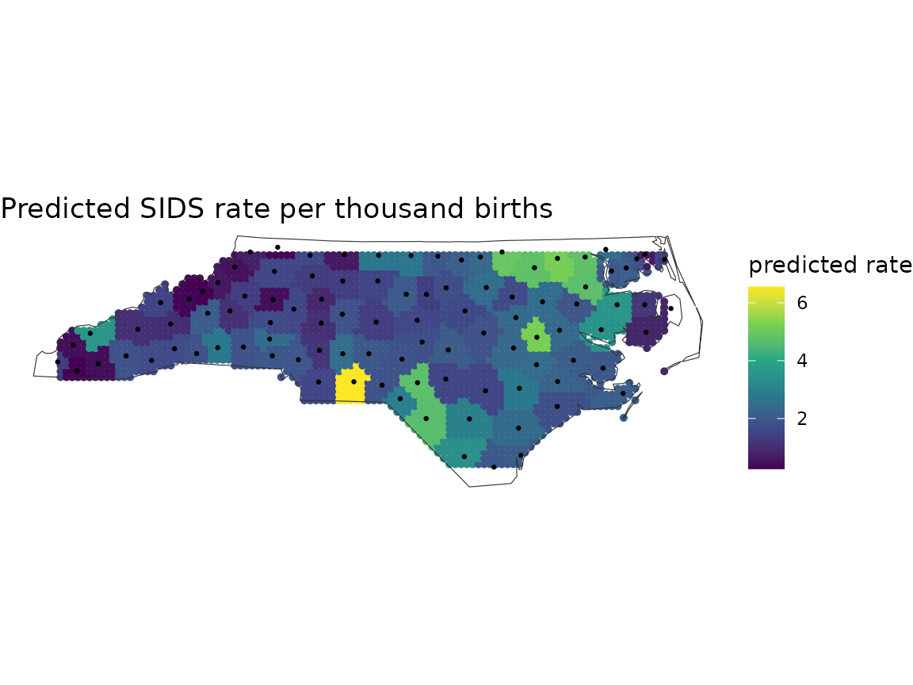

Getting started
Justin Chase
23 September 2026
Source:vignettes/getting-started.Rmd
getting-started.RmdWhat this package is for
You have observations at points and you want values for regions. The usual move is to aggregate onto whatever boundaries exist, and administrative boundaries were drawn for other purposes: a census tract follows a road, a postcode follows a delivery route. Neither follows the field you measured.
This package builds the regions from the distribution of the data, aggregates onto them with standard errors that account for spatial dependence, and scores models on folds that hold out whole regions. The last part matters because a random fold on autocorrelated data returns a number that looks good and means little.
Installing
# install.packages("remotes")
remotes::install_github("elkronos/gis_modeling_toolkit")
# with the vignettes (needs pandoc)
remotes::install_github("elkronos/gis_modeling_toolkit", build_vignettes = TRUE)sf, dplyr, logger and
digest install with it. Everything else is optional and is
needed only for the feature that uses it:
| install | for |
|---|---|
gstat |
variogram fitting: estimate_sac_range(), design
effects, kriging checks |
ranger |
fit_rf_model() and cv_rf()
|
sp, GWmodel
|
fit_gwr_model() and cv_gwr()
|
brms (plus a Stan toolchain) |
fit_bayesian_spatial_model() and
cv_bayes()
|
geometry |
Delaunay triangle tessellations |
ggplot2, patchwork
|
every plot_*() function and every plot()
method |
FNN, Matrix
|
sparse k-nearest-neighbour weights for Moran’s I on large layers |
A missing package produces a message naming it, so nothing fails obscurely.
Getting your data in
Your data arrives through one of two doors, and both end in the same
place: an sf object of POINTs in a projected CRS.
A spatial file
library(sf)
library(spatialkit)
nc <- st_read(system.file("shape/nc.shp", package = "sf"), quiet = TRUE)
c(features = nrow(nc), geometry = as.character(unique(st_geometry_type(nc))))## features geometry
## "100" "MULTIPOLYGON"Those are polygons, and every model here takes points, so reduce
them. coerce_to_points() maps a polygon to a point
guaranteed to fall inside it, using st_point_on_surface(),
a line to its midpoint, and a MULTIPOINT to its centroid. Attribute
columns come along.
counties <- ensure_projected(nc[, c("BIR74", "SID74", "NWBIR74")])
obs <- coerce_to_points(counties)
obs$rate <- 1000 * obs$SID74 / pmax(obs$BIR74, 1) # the response
obs$nw_share <- obs$NWBIR74 / pmax(obs$BIR74, 1) # one predictor
c(points = nrow(obs), geometry = as.character(unique(st_geometry_type(obs))))## points geometry
## "100" "POINT"Two conventions run through every function from here on. The response
and the predictors are named by their column names, as
strings: response_var = "rate",
predictor_vars = "nw_share". And the response must be
numeric or logical; a factor or a character column is refused with a
message saying so.
Hex and square grids need a study area. Dissolving the source
polygons is the usual way to get one, and st_read() a
separate outline if you have it.
A table with coordinate columns
tab <- data.frame(
lon = st_coordinates(st_transform(obs, 4326))[, 1],
lat = st_coordinates(st_transform(obs, 4326))[, 2],
births = obs$BIR74,
sids = obs$SID74
)
head(tab, 2)## lon lat births sids
## 1 -81.49692 36.41746 1091 1
## 2 -81.12964 36.47430 487 0
pts_ll <- st_as_sf(tab, coords = c("lon", "lat"), crs = 4326)
pts <- ensure_projected(pts_ll)crs = is required and cannot be guessed. Lon/lat from a
GPS, a web API or a geocoder is almost always EPSG:4326. If the file
came from a municipal or national dataset, its metadata names the CRS,
and it is frequently something else.
What the numbers are in
Every distance in this package is in the units of the CRS the analysis runs in. A block size, a GWR bandwidth, a variogram range and a Gaussian process length-scale are all distances. Hand any of them a number in degrees when the data are in metres and the result is quietly wrong by a factor of about 100,000.
ensure_projected() is what prevents that. Watch what it
did to the counties above:
st_crs(counties)$input## [1] "+proj=aea +lat_1=34.333391 +lat_2=36.138461 +lat_0=35.559467 +lon_0=-79.400417 +datum=WGS84 +units=m +no_defs"
st_crs(counties)$units_gdal## [1] "metre"nc.shp arrives in NAD27, a geographic CRS in degrees.
ensure_projected() chose a local Albers equal-area
projection and logged why: across this extent the UTM zone distorts
distances by 0.20 percent at worst and the Albers projection by 0.01
percent. Pass target_crs to override the choice.
A layer with no CRS at all is decided by a documented heuristic. If the bounding box fits the lon/lat envelope and the coordinates look like degrees, the layer is read as EPSG:4326 and projected, with a warning saying so. Set the CRS yourself if your data are planar and happen to fall in that envelope.
raw <- st_as_sf(data.frame(lon = c(-81.5, -81.1), lat = c(36.4, 36.5)),
coords = c("lon", "lat"))
st_crs(ensure_projected(raw))$input## [1] "EPSG:32617"Two layers that must line up go through harmonize_crs(),
which returns both in a common CRS:
pair <- harmonize_crs(obs[1:5, ], st_transform(boundary, 4326))
st_crs(pair$a) == st_crs(pair$b)## [1] TRUEYou do not have to project first. Every function that measures a
distance (make_folds(), the fit_*() and
cv_*() functions, predict_surface()) calls
ensure_projected() on what it is given, so a lon/lat layer
is projected on the way in and the same choice is logged. Calling it
yourself, as above, only means the choice is made once and can be
seen.
Four more things about the data, each handled without stopping you:
- A row whose response or predictor is
NA,NaNor infinite is dropped before a fit, and the count is logged;prep_model_data()is the function that does it andattr(x, "dropped")says which rows. - Two observations at the same coordinates are fine for models and
folds; a Voronoi tessellation keeps one seed per location
(
build_tessellation(keep_duplicates = )says what to do with the rest). - A point outside the boundary you tessellate gets no cell:
tess$indexisNAfor it andassign_features_to_polygons()leaves it out unless you ask for it back withkeep_unassigned = TRUE. - A variogram, which is what sizes blocks from the data, needs about
thirty points; below that
estimate_sac_range()returnsNAand says so.
The pipeline, end to end
Seven calls, from points to a map you can defend. The first four turn the points into regions with aggregates; the last three fit a model on the points, score it on folds that hold out whole regions, and say where its predictions can be trusted. Each is covered in depth by one of the other vignettes.
Regions and aggregates
# 1. How many cells can these data support? The answer is a ranked vector,
# best first, and the next call takes it as it is.
lv <- determine_optimal_levels(obs, max_levels = 40)
lv## [1] 5 4 6
# 2. Draw them. A hex grid clipped to an irregular outline returns a few
# more cells than asked for; params records where the count came from.
tess <- build_tessellation(obs, boundary = boundary, method = "hex",
approx_n_cells = lv, quiet = TRUE)
# 3. Put every observation in a cell.
asg <- assign_features_to_polygons(obs, tess$cells)
# 4. Aggregate, with standard errors corrected for within-cell correlation.
# cells_sf attaches the geometry so the result maps; deff = "kish" is the
# correction.
cells <- summarize_by_cell(asg, "rate", cells_sf = tess$cells, deff = "kish")
c(best_level = lv[1], cells = nrow(tess$cells))## best_level cells
## 5 8
tess$params$approx_n_cells_from## [1] "the first of 3 ranked candidates (5, 4, 6)"
names(cells)## [1] "poly_id" "n" "resp_mean_rate" "..sd_resp_rate"
## [5] "..se_resp_rate" "cell_weight" "geometry"
head(st_drop_geometry(cells)[, c("poly_id", "n", "resp_mean_rate",
"..se_resp_rate")], 4)## poly_id n resp_mean_rate ..se_resp_rate
## 1 1 NA NA NA
## 2 2 22 1.483964 0.4154388
## 3 3 NA NA NA
## 4 4 37 1.886037 0.4882373Every aggregate comes with a count and a standard error. The
..sd_ and ..se_ columns are prefixed so they
cannot collide with a column of your own. A cell with one observation
has a standard error of NA, because one number has no
spread, and an empty cell has n = NA: both are kept,
because a region with nothing in it is a fact about the map.
Two ID columns can appear on a cell layer. Every tessellation carries
cell_id, derived from the geometry, so it is the same for
the same cell whatever order the points came in. The hex and square
grids also carry poly_id, which the aggregation defaults
to; assign_features_to_polygons() and
summarize_by_cell() take polygon_id_col and
id_col to name either, and fall back through both when
neither is named.
Eight cells, four of them slivers at the state’s edge with no county
inside, is coarse. That is what the elbow finds on a hundred points, and
vignette("resolution") is where to argue with it:
resolution_profile() scores every cell count on four
criteria at once.
plot_tessellation_map(cells, boundary = boundary, fill_col = "resp_mean_rate",
legend_title = "mean rate")
Cells or points?
Steps 1 to 4 answer what is the value of each region. The
model in the next steps is fitted on the points, because a hundred
counties are a hundred observations and eight cell means are eight. Fit
on cells when the cells are the unit you will report or act on, when the
point-level data cannot leave the building, or when the points are so
dense that the cell means are what the model should see; the reporting
vignette does exactly that. Either way the folds come from the points’
locations, and the cells can serve as the blocks that define them
(make_folds(blocks = tess$cells)).
A model, scored honestly
# 5. Build folds that hold out whole regions. block_size is a distance in
# the CRS's units, here metres. Blocks have to be at least as wide as the
# autocorrelation range for the folds to be honest; on these data no range
# could be identified, so 100 km is set by hand. vignette("spatial-cross-
# validation") is about that choice, and make_folds(auto_range = TRUE)
# makes it from the data when gstat is installed.
random <- make_folds(obs, k = 4, method = "random_kfold", seed = 1)
blocked <- make_folds(obs, k = 4, method = "block_kfold", block_size = 100e3,
seed = 1)
c(folds = blocked$k, blocks = blocked$params$blocks_used)## folds blocks
## 4 14
# 6. Fit and score. cv_rf() fits a random forest inside every fold and pools
# the held-out predictions; the same call with random folds is the number
# a random split would have reported.
cv_random <- cv_rf(obs, "rate", "nw_share", folds = random, num_trees = 300, seed = 1)
cv_blocked <- cv_rf(obs, "rate", "nw_share", folds = blocked, num_trees = 300, seed = 1)
rbind(random = cv_random$overall[, c("RMSE", "MAE", "R2")],
blocked = cv_blocked$overall[, c("RMSE", "MAE", "R2")])## RMSE MAE R2
## random 1.604483 1.120585 -0.04952951
## blocked 1.365868 1.056827 0.29493961
# The pooled number hides how much the folds disagree; with a hundred
# observations they disagree a lot.
rbind(random = range(cv_random$fold_metrics$RMSE),
blocked = range(cv_blocked$fold_metrics$RMSE))## [,1] [,2]
## random 1.0390731 2.189466
## blocked 0.9565161 1.935064The two pooled numbers differ by less than the folds do: the random folds’ RMSE runs from 1.04 to 2.19 and the blocked folds’ from 0.96 to 1.94, and each pooled value sits inside the other scheme’s range. On a hundred observations that is all a fold scheme can say, and it is the reason to read the per-fold range before the pooled number. The gap that blocked folds exist to expose opens when a model can borrow from its neighbours, through the coordinates or a spatially smooth predictor; the README’s quick start shows one of about 1.6 on a larger simulated field.
cv_gwr() and cv_bayes() are the same call
for the other two backends, and cv_spatial() takes any
learner you write. compare_models_cv() runs the backends on
the same folds and puts them in one table.
A surface, and where to trust it
# 7. Predict on a grid over the study area and ask where the prediction is
# extrapolating. The area of applicability compares each grid cell's
# predictors with the training data, using the folds above as the
# reference, so the threshold is the one the cross-validated score was
# earned under.
fit <- fit_rf_model(obs, "rate", "nw_share", num_trees = 300, seed = 1)
surf <- predict_surface(fit, n_cells = 4000, covariates = obs,
boundary = boundary)
aoa <- area_of_applicability(surf, model = fit, folds = blocked)
aoa## Area of applicability (Meyer & Pebesma 2021)
##
## predictors : 1 (nw_share)
## weighted : no (all predictors count equally)
## training : 100 points
## reference : nearest point outside each of 4 CV folds (block_kfold)
## normaliser : 1.1527 (mean pairwise distance)
## threshold : 0.0440 (outlier-removed max of training DI)
##
## 2384 of 2384 prediction points inside the AOA (100.0%)
library(ggplot2)
# predict_surface() returns the grid as points (cell centres), so the surface
# is drawn as coloured points; the county points sit on top in black.
ggplot() +
geom_sf(data = surf, aes(colour = .pred), size = 1.1) +
geom_sf(data = boundary, fill = NA, colour = "grey20") +
geom_sf(data = obs, size = 0.5, colour = "black") +
scale_colour_viridis_c(name = "predicted rate") +
theme_void() +
ggtitle("Predicted SIDS rate per thousand births")
Every grid cell is inside the area of applicability here, because the
grid took its predictor from the nearest county: nothing on it is a
combination the model has not seen. Hand predict_surface()
a covariate raster of its own and this is the check that says which
parts of the map are guesses.
Where to go next
| vignette | covers |
|---|---|
vignette("resolution") |
choosing the cell count, and the criteria that disagree about it |
vignette("spatial-cross-validation") |
fold schemes, block sizing, and reading a CV result |
vignette("diagnostics") |
residual autocorrelation, aggregation standard errors, kriging adequacy, area of applicability |
vignette("spatialkit_nc_demo") |
the whole pipeline end to end, with maps |
vignette("reporting") |
handing the regions to someone else, and what to report |
?spatialkit walks the pipeline and names the function
for each step. Ten numbered scripts install with the package and run the
same steps on a simulated field with known structure, printing what to
look for before each figure:
dir <- system.file("scripts", package = "spatialkit")
list.files(dir)
Sys.setenv(SPATIALKIT_TOUR_PAUSE = "no") # or press Enter between figures
source(file.path(dir, "03-folds.R"))Words that recur
| term | meaning here |
|---|---|
| variogram | semivariance of the response against the distance between pairs of
points; the curve estimate_sac_range() fits |
| nugget, sill, range | the variogram’s value at zero distance (noise), the value it levels off at (total variance), and the distance at which it gets there; the effective range is where it reaches 95 percent of the sill |
| autocorrelation range | that effective range: beyond it two observations are nearly independent, which is what a block or a buffer has to exceed |
| block | a square of the study area used to build a fold; a fold holds out whole blocks |
design effect (deff) |
how many times larger a cell mean’s variance is than the
independent-sample formula says, because the points in a cell are
correlated; n / deff is the effective sample size |
| flat region | the cell counts a resolution criterion cannot distinguish from its optimum; a set, not an interval |
| support ceiling, range floor | the most cells the point count allows (n / min_cell_n)
and the fewest the autocorrelation range allows
(area / range^2); a criterion whose optimum sits on either
is being chosen for by that bound |
| dissimilarity index (DI) | how far a prediction location’s predictors sit from the training data, on the scale of the training data’s own spread; the area of applicability is where DI stays below what cross-validation saw |
| row ID |
..row_id, a column the package stamps on a layer so
that folds and dropped rows can be traced back to the rows you passed
in |